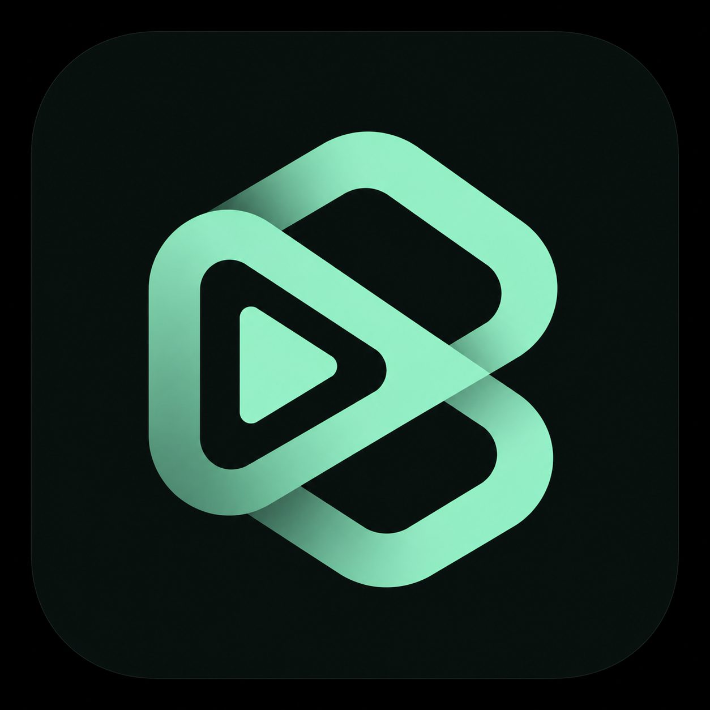

Audio Remote for Android
サポートとプライバシー
サポート
不具合やご質問の際は、使用しているiPhoneとAndroid端末の機種、OSバージョン、問題が起きた操作を添えてご連絡ください。
homirun.dev@gmail.com基本的な接続手順
- Android端末でAudio Remote Hostを起動します。
- iPhoneアプリで端末を検索します。
- Android端末に表示された6桁PINをiPhoneへ入力します。
- 接続後、再生・一時停止・前後の曲・音量を操作できます。
プライバシーポリシー
Audio Remote for AndroidおよびAudio Remote Host（以下、総称して「本アプリ」）は、Android端末のメディア再生をBluetooth Low Energy（BLE）で操作するためのiPhoneアプリとAndroidアプリです。
本アプリが端末内で扱う情報
- 登録した端末を識別する情報
- 端末間の接続を認証するためのPINおよびトークン
- Android端末のメディア再生状態およびメディア情報
これらは接続と操作のために各端末上で処理されます。認証トークンはiOSのキーチェーンおよびAndroidアプリ専用領域に保存します。メディア情報は永続保存せず、開発者のサーバーへ送信しません。
広告について
iPhoneアプリは広告配信にGoogle AdMobを使用します。Googleは広告配信、セキュリティ、診断、効果測定などのために、IPアドレス、端末識別子、広告の表示・操作情報、診断情報などを処理する場合があります。iPhoneアプリは非パーソナライズ広告をリクエストします。Androidアプリは広告を表示しません。
Googleによる情報の取り扱いは、Googleプライバシーポリシーをご確認ください。
Bluetooth権限
本アプリは端末同士を検索・接続し、操作命令と再生状態を送受信するためにBluetooth権限を使用します。位置情報の取得には使用しません。
Androidの通知アクセス
Androidアプリは、端末上で再生中のメディアを操作するために通知アクセスを使用します。通知の本文を収集、保存したり、開発者のサーバーへ送信したりしません。また、BLE接続を維持している間は常駐通知を表示します。
保存情報の削除
iPhoneアプリ内の「別の端末を選ぶ」を実行すると、保存した端末識別情報と認証トークンを削除できます。AndroidアプリではPINの再生成により登録済みトークンを無効化できます。アプリのストレージ消去またはアンインストールでも端末内の保存情報を削除できます。
お問い合わせ
本ポリシーに関するお問い合わせは、homirun.dev@gmail.comへご連絡ください。
変更
本ポリシーは、機能や利用サービスの変更に応じて改定する場合があります。変更後の内容はこのページで公開します。